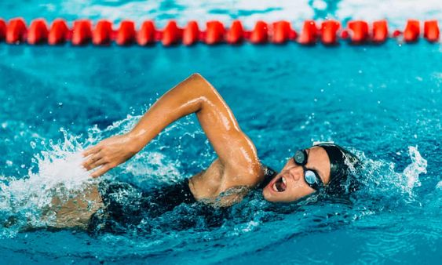
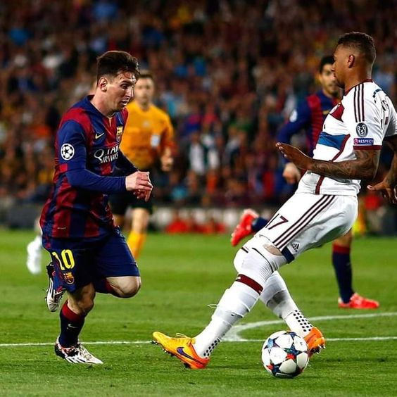
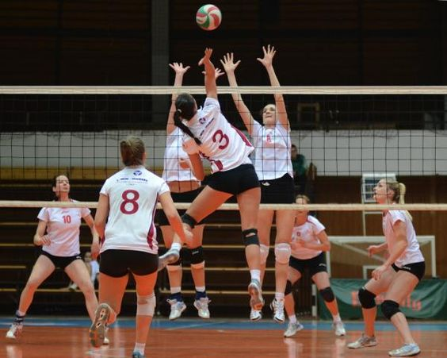
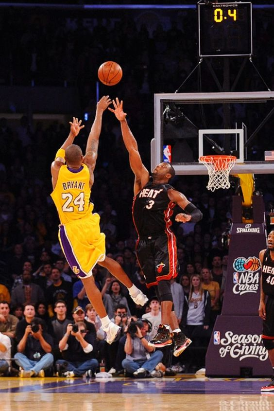
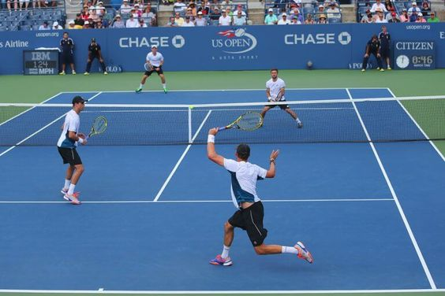
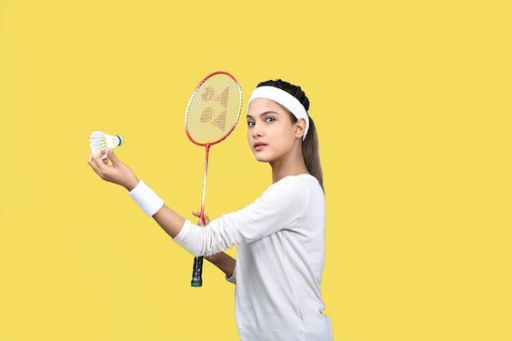
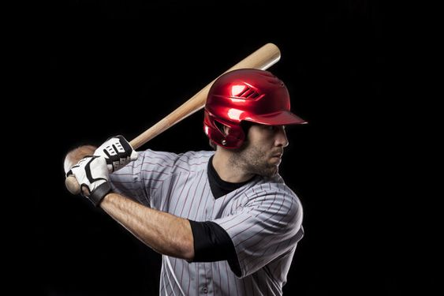
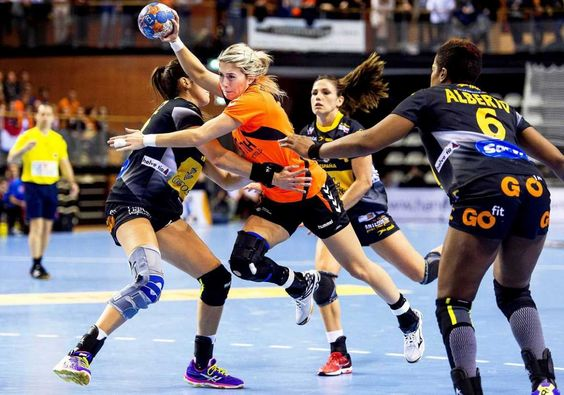
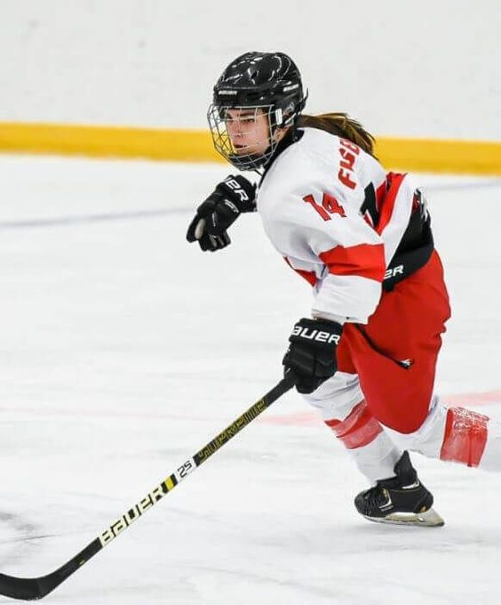
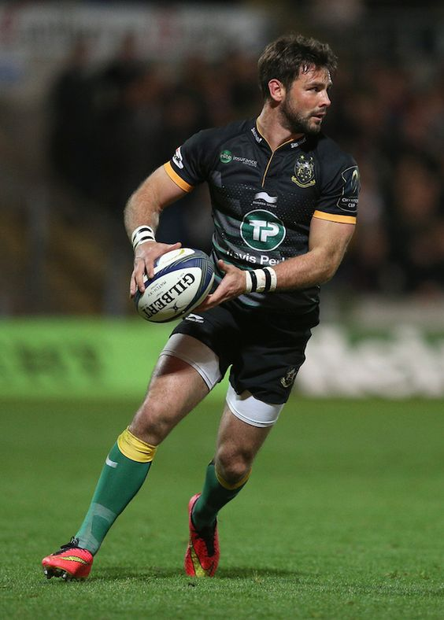

| Puesto | Deporte |
Practicantes en millones |
Descripcion | Imagen |
|---|---|---|---|---|
| 1 | Natación | 53.28 | La natación es un deporte que tiene un bajo impacto para las articulaciones. Actualizado a las 09:16h. La natación es un deporte que consiste en trasladarse de un lugar al otro en el agua sin que la persona toque el suelo. La natación puede practicarse en piscina o en aguas abiertas. |  |
| 2 | Fútbol | 52.92 | Juego entre dos equipos de once jugadores cada uno, cuyo objetivo es hacer entrar en la portería contraria un balón que no puede ser tocado con las manos ni con los brazos, salvo por el portero en su área de meta. |  |
| 3 | Voleibol | 52.35 | El voleibol, balonvolea o simplemente voley, es un deporte donde dos equipos se enfrentan sobre un terreno de juego liso separados por una red central, tratando de pasar el balón por encima de la red hacia el suelo del campo contrario. |  |
| 4 | Baloncesto | 44.68 | El baloncesto, basquetbol o básquetbol (del inglés basketball; de basket, 'canasta', y ball, 'pelota'), o simplemente básquet, es un deporte de equipo que se puede desarrollar tanto en pista cubierta como en descubierta, en el que dos conjuntos de cinco jugadores cada uno, intentan anotar puntos |  |
| 5 | Tenis | 40.84 | Se disputa entre dos jugadores/as (individuales) o entre dos parejas (dobles) jugando con raquetas y pelotas y consiste en golpear la pelota después de un rebote o antes que rebote con la raqueta para que vaya de un lado al otro del campo pasando por encima de la red. |  |
| 6 | Badminton | 35.44 | Bádminton. El bádminton es un deporte de raqueta que consiste en que los jugadores tienen que golpear el volante o pluma con sus raquetas porque este cruce la pista por encima de la red y caiga en la pista de los oponentes. Puede ser practicada por todo tipo de personas, sin distinción de sexo o edad. |  |
| 7 | Beisbol | 25.34 | El béisbol es un deporte de bate y pelota jugado en un campo por dos equipos uno contra el otro. En el béisbol, un jugador de un equipo lanza una pelota pequeña y redonda a un jugador del otro equipo, quien trata de golpearla con un bate. Luego, el jugador que golpea la pelota tiene que correr alrededor del campo. |  |
| 8 | Balonmano | 24.64 | El balonmano o handball es un deporte que se juega en equipo y que potencia el juego de ataque. Mediante su práctica se refuerza la disciplina, el trabajo grupal y la constancia. |  |
| 9 | Hockey | 23.09 | El hockey o jóquey es una familia de deportes en la cual dos equipos compiten para llevar una pelota dura o un disco de caucho a la portería contraria para anotar un tanto con la ayuda de un palo largo llamado stick. |  |
| 10 | Rugby | 22.19 | Cada equipo está conformado por 15 jugadores, la pelota es ovalada y se juega con las manos (aunque también se pueden utilizar los pies). Los pases con las manos deben hacerse exclusivamente hacia atrás -sí se puede patear el balón hacia adelante- y el objetivo es apoyar en el ingoal (área) rival. |  |